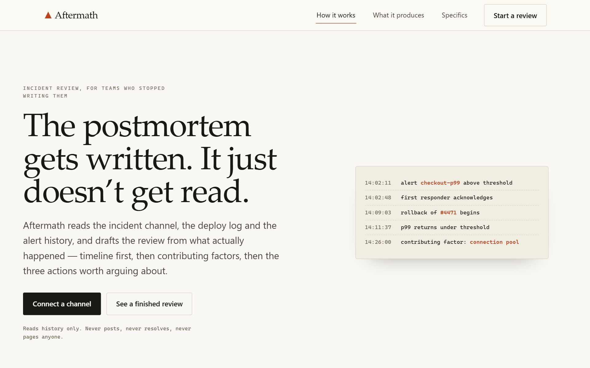
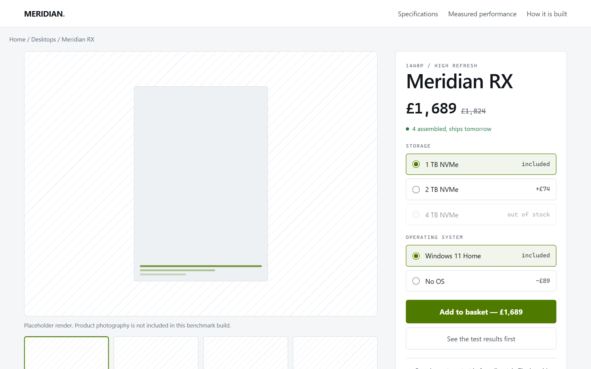
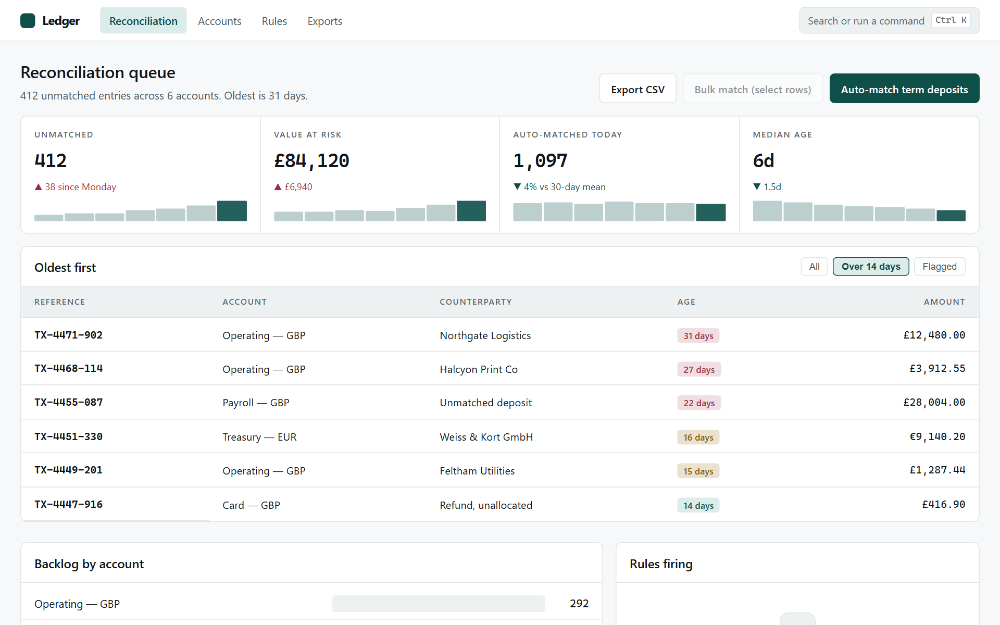
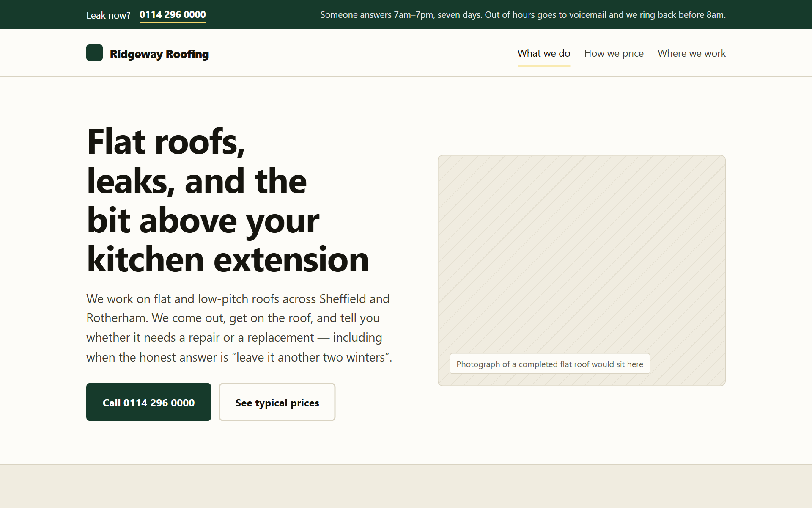
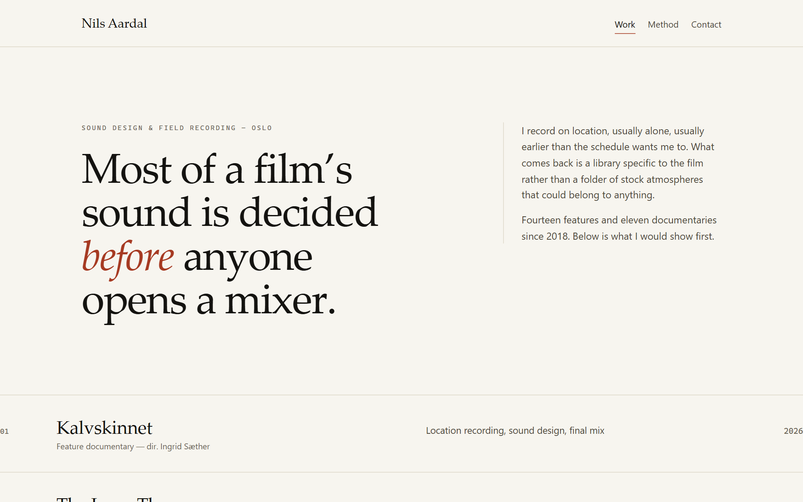
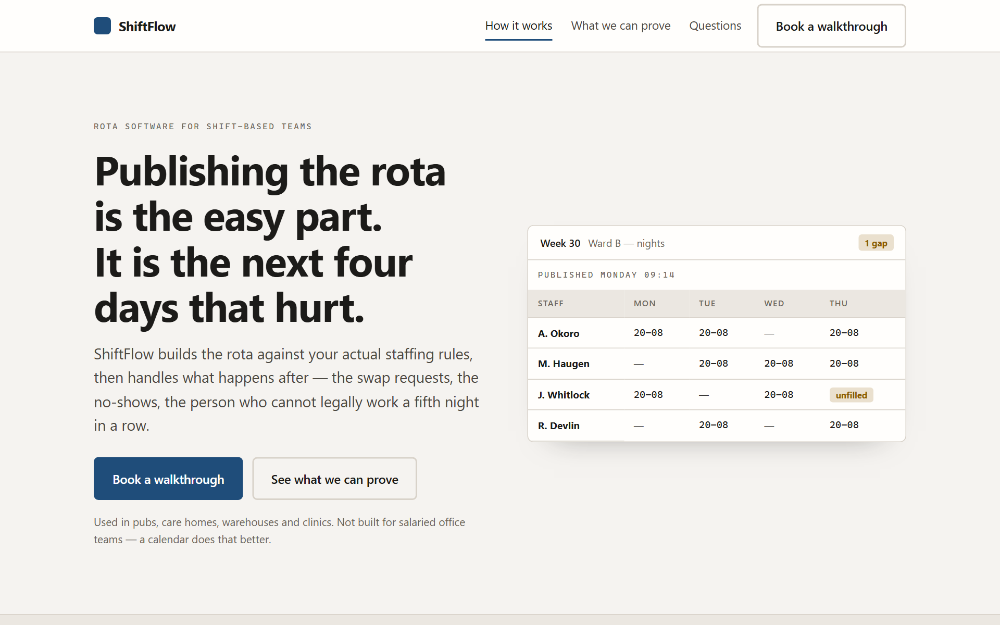
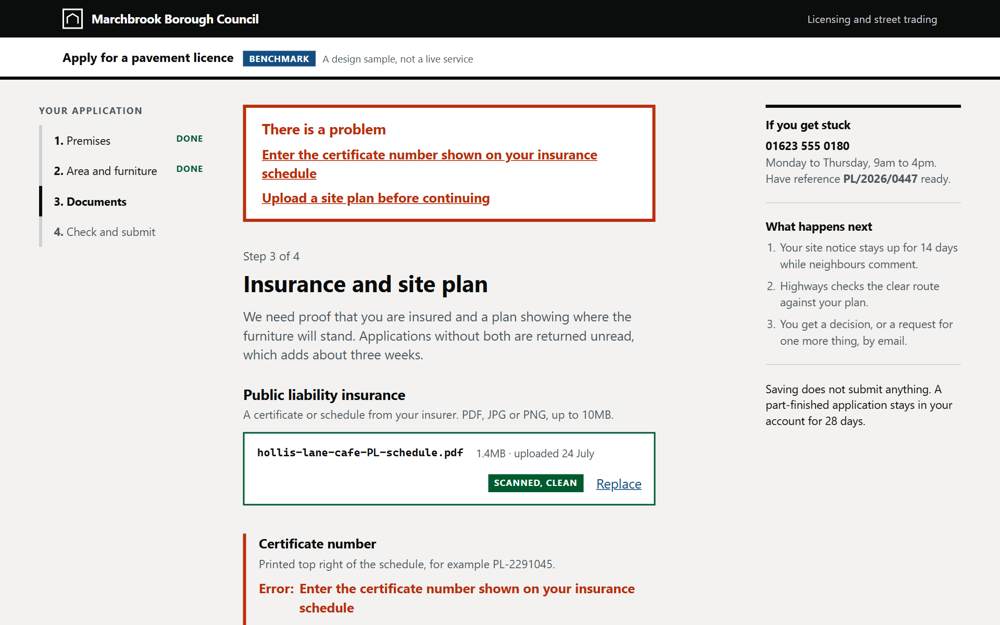
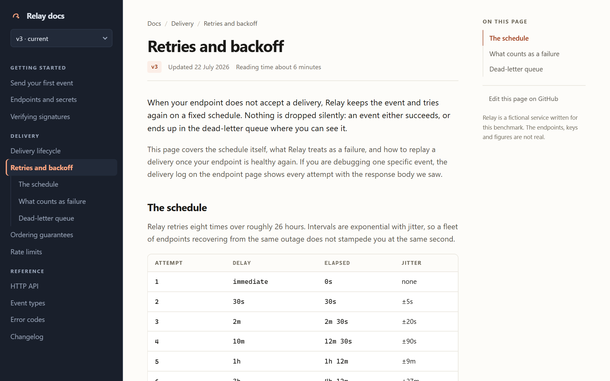
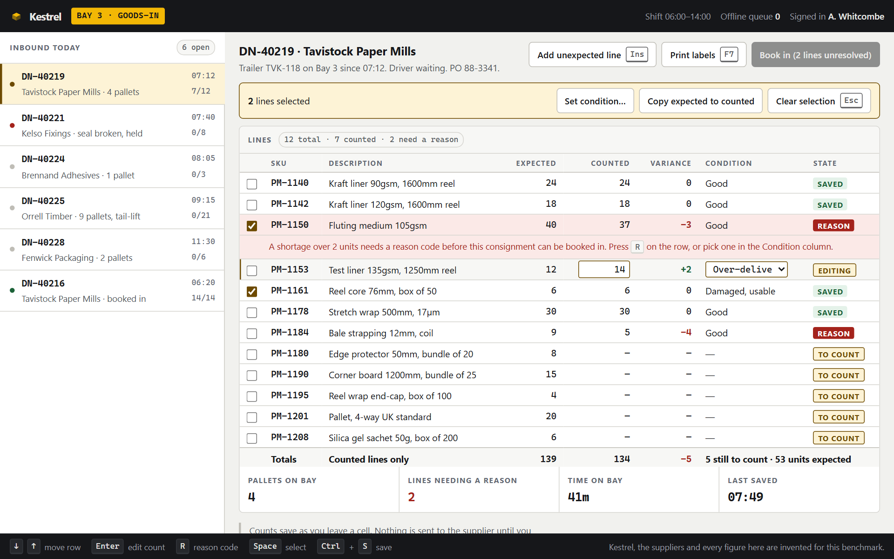
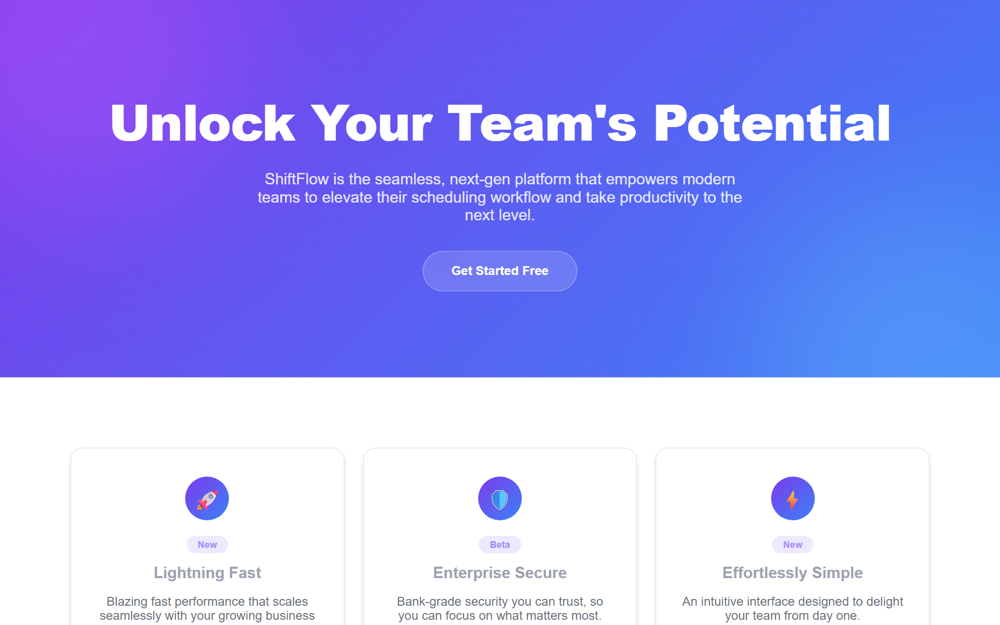

sitesmith is a coding-agent skill for building websites that do not look AI-generated. Every page below was built from a different brief by the same skill, then rendered, scanned and corrected by the script that ships with it. The tenth is the control: what you get when nothing steers the model.
Every frame links to the page itself, not to a picture of it. Open one and resize the window, or switch your system to dark — both schemes are part of the pass.

Incident review tool sold to engineers who distrust marketing pages.

Built-to-order gaming PC. Conversion-led, spec-heavy, dark by design.

Reconciliation queue. Data-dense product UI, governed by the UX rules.

Flat-roof repair. Trust first, phone-led, priced in the open.

Sound designer's portfolio. A ruled index, not a card grid.

The control page, rebuilt. Same product, same claims, audited first.

A council licence application with real error, upload and review states.

API reference read sideways from search: three panes, code, callouts.

Warehouse goods-in. Keyboard-first, 12 lines, two of them unresolved.

The same product with nothing steering the model. It is kept, not fixed — it is the measurement, and CI fails if it ever starts passing.
Fifteen defects found in work that looked finished in the editor. Not one of them is visible in a diff, and every one of them ships if the process stops at "the code compiles".
| Page | Defect | Why review missed it |
|---|---|---|
| 01 | +55px horizontal overflow at 375px | An inline style="display:contents" silently beat the display:none media query |
| 01, 02, 05 | Body text between 4.00:1 and 4.37:1 | Looks fine. Fails AA by a tenth, and only in one of the two schemes |
| 02 | Status green at 1.87:1 in light mode | The colour was only ever chosen against the dark background |
| 03 | White button label at 1.83:1 in dark mode | The light-mode value was hardcoded |
| 03 | Scrollable table unreachable by keyboard | Nothing visually wrong at any width |
| 03 | +10px overflow on Linux only | Nowrap flex items let the text spill, so no element box overflowed while the document did |
| 07 | A <span> between <dt> and <dd> |
Renders perfectly. The list simply stops being a list |
| 08 | Breadcrumb current page at 1.6:1 | The separator's colour rule matched the label too |
| 08 | role="tablist" over radio inputs |
The role forbids those children; the tabs looked and worked fine |
| 08 | Code blocks and table scroll, but take no focus | Content past the fold was mouse-only |
| 08 | Sidebar at height:100vh |
Made every page exactly one viewport tall whatever it contained |
| 09 | +250px overflow from a 1fr track |
1fr resolves its minimum to auto, so the track grew instead of the grid scrolling |
| 09 | Hidden labels escaping the scroll container | Absolutely positioned with no positioned ancestor, so each 1px label sat 615px into the document |
The skill triggers on its own. You describe the site; it routes, commits to a direction, builds, then measures.
Install as a plugin from the marketplace in this repository.
claude plugin marketplace add byensitmagnus/sitesmith
claude plugin install sitesmith@sitesmithAnything that reads ~/.claude/skills or ~/.agents/skills.
git clone https://github.com/byensitmagnus/sitesmith.git
cp -r sitesmith/skills/sitesmith ~/.claude/skills/No command to remember. These are real prompts from the briefs above.
> Build a landing page for a company that
does flat-roof repair in Sheffield.
> This dashboard looks generic. Audit it
and fix what you find.Nothing on this page is asserted. Run the same script yourself.
cd benchmarks
npm i && npx playwright install chromium
node serve.mjs 4321 . &
node ../skills/sitesmith/scripts/verify.mjs \
http://localhost:4321/09-data-entry/